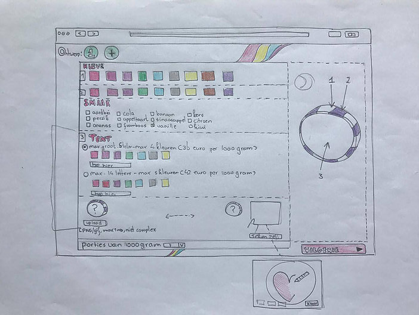
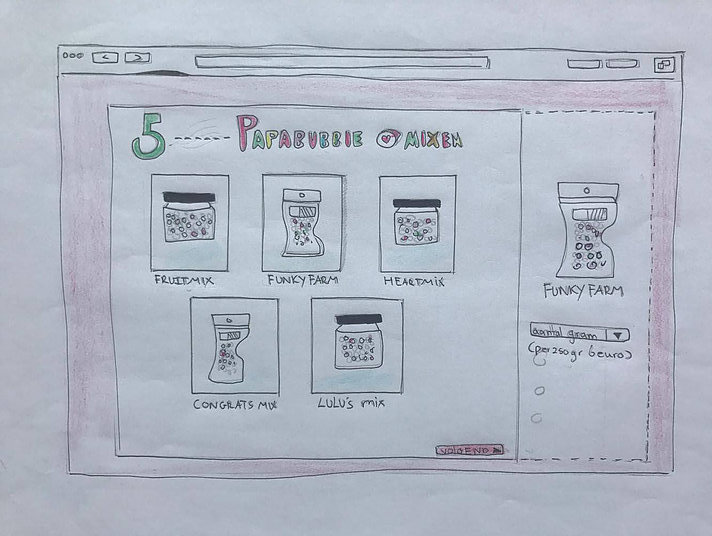
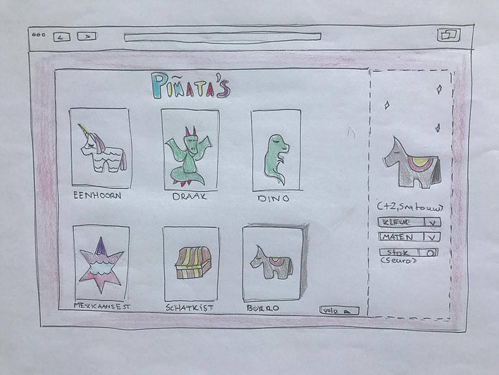

Pappa Bubble

Er gekozen worden tussen een aantal casussen. 1 daarvan was de snoepzaak Papabubble. Deze zaak verkoopt snoepjes, maar jij kan ook snoepjes ontwerpen. Papabubble wilde nog verder uitbreiden en starten met het verkopen van Pinatas. Aan mij de taak om een goedwerkende een site te ontwerpen.
Het proces Het ontwerpen van een goedwerkende Papabubble site was uiteindelijk moeilijker dan ik had gedacht. Er moesten veel functies in de site worden verwerkt en deze moesten ook nog eens makkelijk uitvoerbaar kunnen zijn voor de gebruiker. Er moesten veel vragen beantwoord worden voordat ik de site daadwerkelijk kon ontwerpen: - Zijn er verschillende maten Pinatas? Dus ook verschillende hoeveelheden snoep? - Hoe kan de gebruiker snel snoep ontwerpen? - Kan de gebruiker de Pinatas vullen met een eigen ontwerp of ook met snoep uit de winkel? - Moet de snoep gesorteerd worden op kleur,smaak,ontwerp? Na al deze vragen op een rijtje te hebben kon het ontwerpen beginnen. Het was een drukke week waar ik een hele boel A4'tjes verslonden heb om op mijn uiteindelijke ontwerp te komen.
Het project bestond uit een aantal intensieve weken waar geen tijd verspilt kon worden. Bij het ont-werpen van het product moest er erg veel onderzocht worden. Wij hadden de kant van de dromen gekozen en deden dan ook onderzoek naar de betekenis van dromen. Na het kiezen van een kant moesten wij gaan uitzoeken hoe wij dromen gingen verwerken in een product. Het eerste dat in ons op kwam was dat iedereen de betekenis van zijn/haar droom wilt weten en dat dromen een reflectie zijn van wat jij in het dagelijkse leven mee- maakt. De laatste stap was het bedenken hoe de interactie zou verlopen en hoe ons product eruit zal zien. En dat was de taak die ik op mij nam.
Papabubble Uiteindelijk heb ik heb gekozen voor een zoete uitstraling waar de sfeer van de gekleurde snoepjes duidelijk naar voren komt. Mijn product was vooral gefocused op het makkelijk kunnen ontwerpen van eigen snoep doormiddel van filters. - De snoepjes konden gekozen worden eigen ontwerp of uit de winkel - De pinatas konden gekozen worden op vorm en maat. - De snoepjes konden ontworpen worden op smaak, kleur en tekening. - Het aantal snoepjes had een limiet van hoeveelheid gebasseerd op de gekozen Pinata, zo hoeft de gebruiker niet bang te zijn dat hij/zij teveel besteld.
  